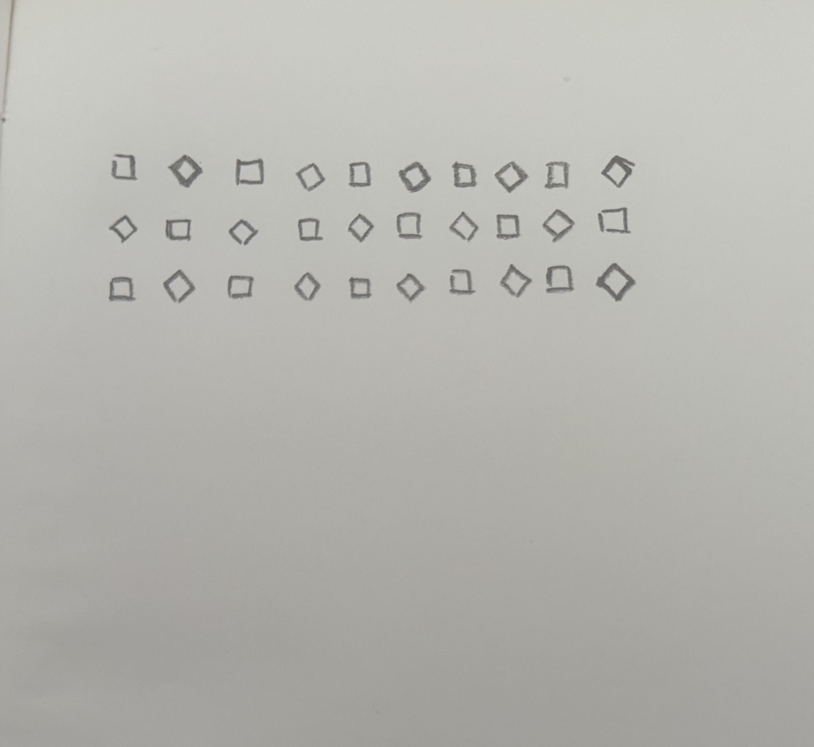

For my initial sketch, I created a repeating pattern using squares. I used nested for loops to organize the squares into rows and columns, and used modulo to alternate between regular squares and squares rotated by 45 degrees. I also added mouse interaction, so the size of the squares changes based on their distance from the mouse. For my second sketch, I used p5.Polar to transform the grid structure into concentric circular patterns. Instead of organizing the squares through X and Y positions, p5.Polar allowed me to organize them through distance and rotation around a center point. I also used a for loop to create multiple rings and mouse movement to control the rotation between them. Through this process, the original grid transformed from a fixed rectangular structure into a radial and more dynamic composition. Using for loops made it much easier to repeat and modify the same form systematically. Compared with a brute force method, I can change one rule in the loop and immediately affect the entire pattern instead of changing every square individually.
